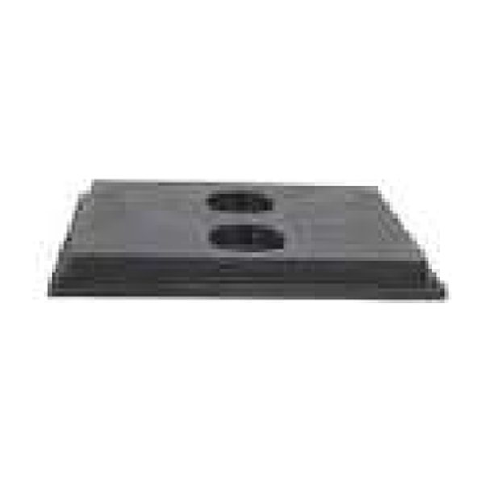

Parts › Cab, Seat Parts & Comfort › 431911331171

Available
Email for a quote
Toyota 431911331171 Mount Rubber
| OEM part number | 431911331171 |
| Fits | Toyota |
| Category | Cab, Seat Parts & Comfort |
| Type | Aftermarket replacement |
Send us the quantity you need and we'll reply with pricing, usually within 24 hours. Not the exact part? We can source it. Send the part number or a photo.